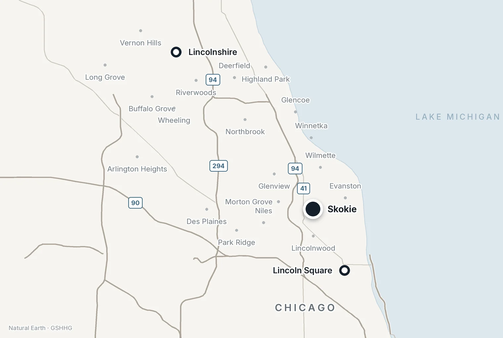

Locations
Joint Replacement Surgeon in Skokie
Dr. Harris sees patients and performs hip and knee replacement surgery in Skokie, on Chicago’s North Shore.
Dr. Harris sees patients and performs hip and knee replacement surgery in Skokie, on Chicago’s North Shore.
Dr. Harris is an orthopaedic surgeon specializing in hip and knee replacement. At the Skokie office he evaluates hip and knee arthritis and performs joint replacement surgery.
The Skokie location serves patients across Chicago's North Shore, including Evanston, Wilmette, Winnetka, Glenview, Northbrook, Park Ridge, Lincolnwood, Morton Grove, and Niles, as well as nearby Chicago neighborhoods. Dr. Harris also sees patients across the North Shore and in the city of Chicago.
Dr. Harris cares for patients needing hip replacement and knee replacement, including revision joint replacement, and he treats hip and knee arthritis without surgery. New to this? Start with patient guides and conditions.
A first visit starts with the history: where the pain is, how long it has been there, what makes it worse, and what has already been tried. Dr. Harris then examines the hip or knee. He generally checks the joint above and below it as well, since hip arthritis can show up as knee or thigh pain and a back problem can mimic either one.
X-rays are generally taken in the office during the same visit, so the examination and the imaging can be reviewed together before you leave. If you already have recent X-rays or an MRI from elsewhere, bring them on a disc or make sure they are available through a patient portal. They may not need to be repeated.
The visit ends with a plan. For many patients that means nonoperative treatment first: activity changes, physical therapy, anti-inflammatory medication or an injection. For others it means a discussion of whether a hip replacement or knee replacement makes sense and what the timing might look like. A joint replacement is rarely something a patient strictly "needs", and how long you wait is largely up to you.
Whether your insurance plan requires a referral before you are seen is covered on the joint replacement surgeon in Chicago page.
The Skokie office is reached from the Edens Expressway (I-94), and by the CTA Yellow Line and Metra. Parking is free in the surface lot at the building.
Patients who find Lincolnshire or the city more convenient can be seen at the North Shore office or the Chicago office instead. The visit is the same at each.

Dr. Harris sees patients for second opinions at the Skokie office. Some have been told they need a hip or knee replacement and want another surgeon's opinion of the X-rays before deciding. Others have an existing joint replacement that has become painful, or has never felt right, and want to know why.
Bring the imaging. For an existing joint replacement, bring the operative report from the original surgery as well, since it identifies the implant. The joint replacement surgeon in Chicago page covers when to get a second opinion. The revision joint replacement page covers how a painful joint replacement is evaluated.
No. The Skokie office serves Evanston, Wilmette, Winnetka, Glenview, Northbrook, Park Ridge, Lincolnwood, Morton Grove, Niles and the nearby Chicago neighborhoods, and anyone is welcome to choose whichever of the three offices is most convenient.
Usually, yes. X-rays are generally taken in the office at the first visit, so the examination and the imaging can be reviewed together before you leave. Recent X-rays or an MRI from elsewhere may mean fewer repeat films, so bring them.
Yes. Dr. Harris sees patients for second opinions at the Skokie office, both before a first joint replacement and for an existing hip or knee replacement that has become painful.
Yes. Parking is free in the surface lot at the building.
Dr. Harris sees patients for hip and knee problems at the Skokie office.